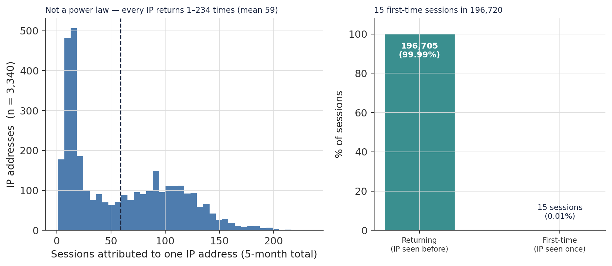
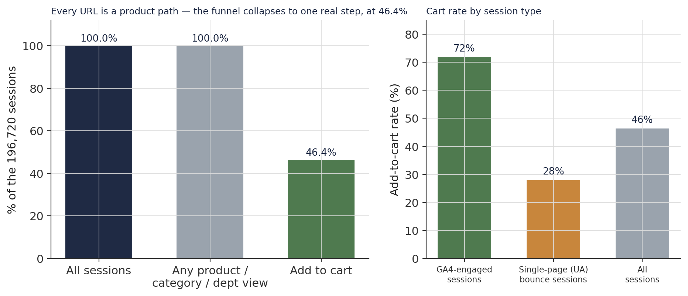
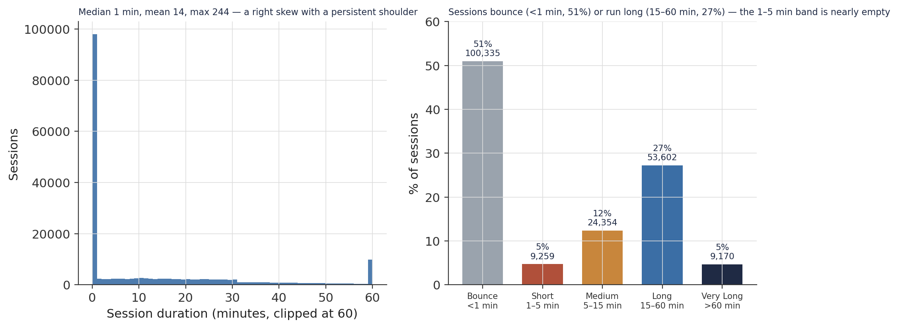
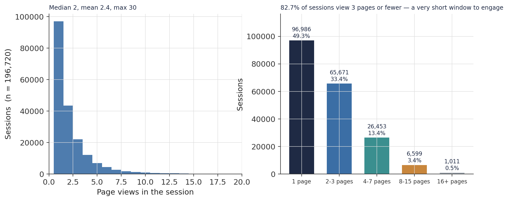
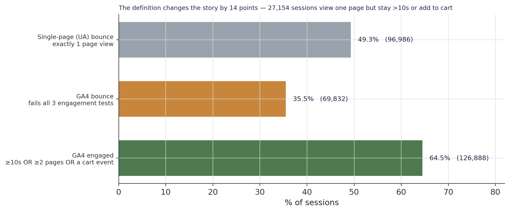
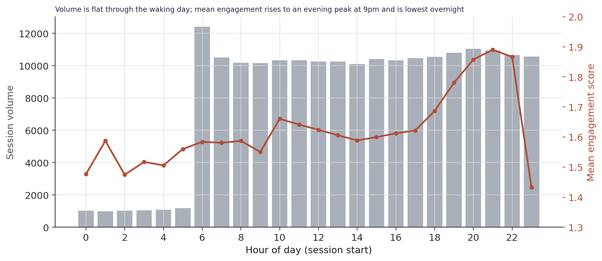
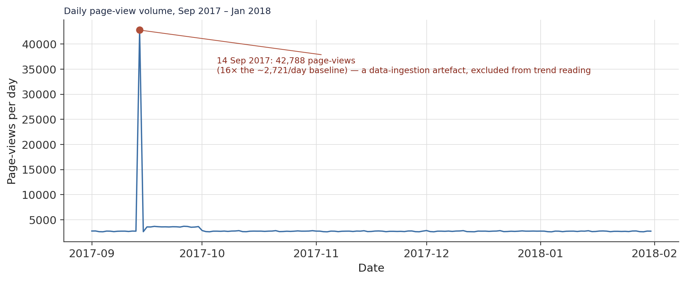
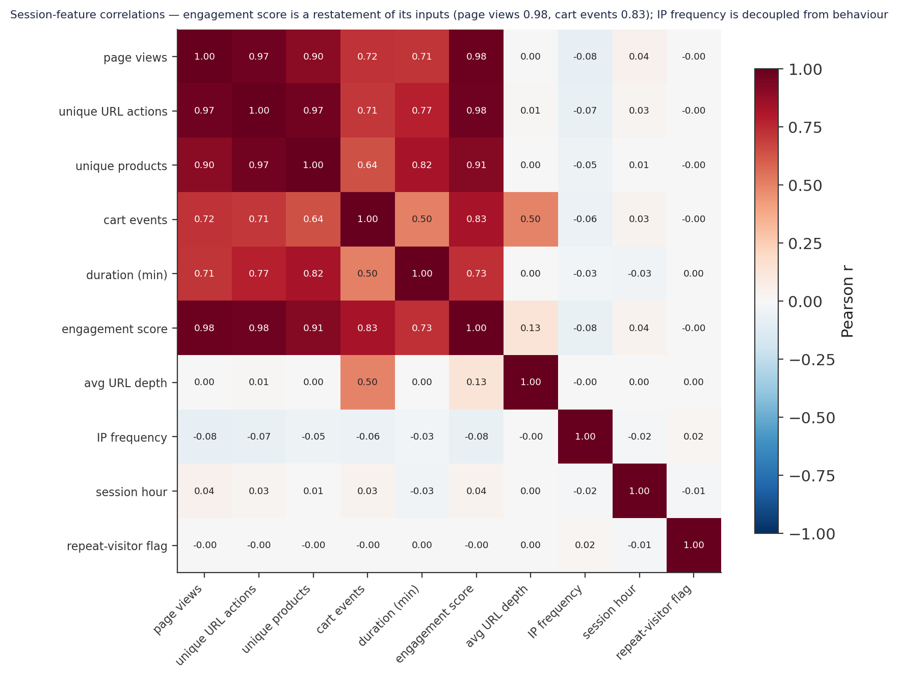
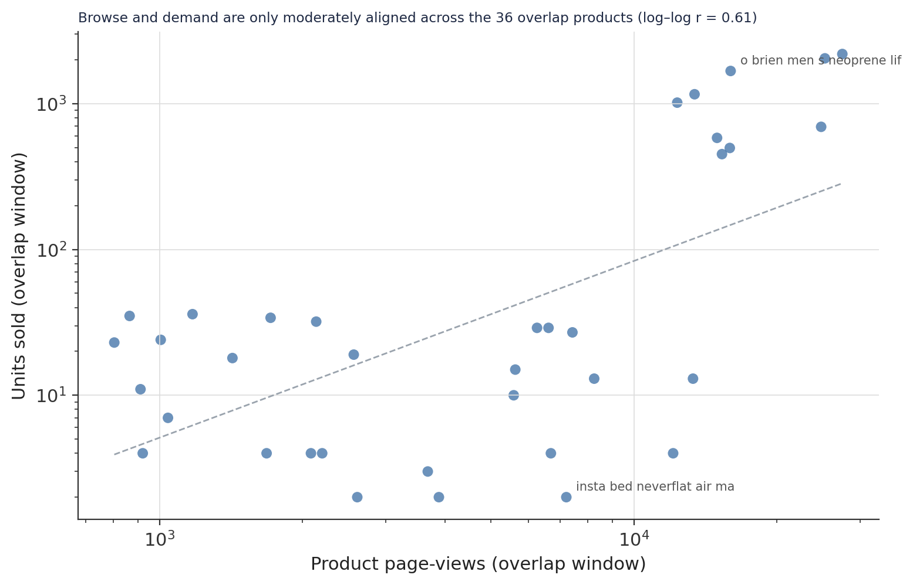

A 46.4% Session-to-Cart Rate and a Bimodal Audience: A Conversion and Engagement Diagnostic Over 196,720 Sessions
An exploratory clickstream analysis of a five-month web access log — why the funnel collapses to one step, why the audience is a panel rather than open traffic, and what that does to every rate the data reports.
A behavioural diagnostic of 196,720 web sessions reconstructed from a product-page access log. The funnel is degenerate: every URL is a product path, so the only real step is browse → cart, at 46.4%. The audience is a panel: 3,340 IP addresses, ~59 sessions each over five months, 15 first-time sessions in the whole dataset — so the 46.4% rate reflects catalogue-familiar repeat visitors, not cold traffic. Behaviour is bimodal: sessions bounce in under a minute (51%) or run 15–60 minutes (27%), with almost nothing between; 82.7% view three pages or fewer. Bounce depends on the definition: 49.3% by the single-page rule, 35.5% by GA4’s engagement rule. Temporal volume is flat; engagement peaks in the evening (a correction to the source notebook’s off-peak claim).
clickstream analysis, web sessions, conversion funnel, add-to-cart rate, bounce rate, GA4 engagement, sessionisation, user panel, exploratory data analysis, browse versus purchase, Python, pandas
Abstract
This study is a descriptive clickstream analysis of the DataCo web access log — 466,728 page views logged between 1 September 2017 and 31 January 2018, aggregated into 196,720 visitor sessions carrying 37 engineered features. The analytical table is the validated Gold layer of a companion medallion pipeline; every measure is recomputed from it. Two structural facts govern the interpretation. The access log is restricted to product-page URLs, so every session already registers a product, category, and department view — the conversion funnel from arrival to product view collapses to 100% and the only meaningful step is the transition to an add-to-cart event, which occurs in 46.4% of sessions. The audience is a bounded panel, not open web traffic: 3,340 IP addresses generate the sessions, an average of ~59 each over five months, and only 15 of the 196,720 sessions originate from an IP never seen again — against a 30–60% new-visitor rate for a typical consumer site. The 46.4% cart rate is therefore a property of catalogue-familiar repeat visitors and should not be read as a general conversion benchmark. Session behaviour is bimodal: 51% of sessions bounce in under a minute while 27% run 15–60 minutes, with the 1–5 minute band nearly empty; 82.7% of sessions view three product pages or fewer. Bounce rate is 49.3% by the single-page (UA) rule and 35.5% by GA4’s engagement rule — the two definitions differ by 14 points. Traffic volume is flat across the window (bar a single-day ingestion artefact on 14 September); mean engagement rises to an evening peak around 9pm — the reverse of the source notebook’s “off-peak visitors engage more” claim. No causal claim is made.
Keywords: clickstream analysis, conversion funnel, add-to-cart rate, bounce rate, GA4 engagement, user panel, browse versus purchase
Introduction
The companion operations, customer, and catalogue studies of this dataset worked from the order record. This study works from the other side of the transaction: the web access log — every product-page request made to the retailer’s site over a five-month window, reconstructed into visitor sessions.
The unit of analysis is the session: a run of page views from one IP address with no gap longer than 30 minutes. Each session is summarised into one row carrying its duration, page count, product breadth, cart activity, time of day, and the frequency with which its IP appears in the data.
Two properties of the data shape everything that follows, and both are stated up front because they bound what the numbers mean. First, the log captures product pages only — no homepage, search, or account traffic — so the classic “arrival → browse → cart” funnel has no early stages to measure. Second, the visitor base is a small, high-frequency panel: a few thousand IPs, each returning dozens of times. The headline 46.4% session-to-cart rate is real, but it is the rate for that panel, not a benchmark a cold-traffic retailer could expect to match.
Method
Data source
Two tables. sessions_features_gold (196,720 rows × 37 columns), one row per session, no missing values in any analysed column. fact_access_logs_gold (466,728 rows × 15 columns) at page-view grain, used for the daily-volume and product-concentration views. Cross-dataset comparison uses the _overlap variants of the session and logistics tables (195,341 sessions; 13,678 order-items) restricted to the shared window, joined on canonical product name. Table 1 summarises the session grain.
Table 1
Session Characteristics (N = 196,720 sessions from 3,340 IP addresses)
| Feature | Median | Mean | 75th pct | Max | Skew |
|---|---|---|---|---|---|
| Duration (minutes) | 1.0 | 13.9 | 22.0 | 244.0 | +2.48 |
| Page views | 2 | 2.37 | 3 | 30 | +3.41 |
| Unique products viewed | 1 | 2.11 | 3 | 18 | +2.33 |
| Cart events (key events) | 0 | 0.67 | 1 | 12 | +2.37 |
| Engagement score | 1.20 | 1.65 | 2.00 | 18.4 | +3.05 |
Sessions per IP (ip_freq, session-weighted) |
104 | 99.0 | 127 | 234 | −0.20 |
Note. Every behavioural feature is heavily right-skewed except ip_freq, which is compressed and near-symmetric — the panel signature. Regression targets need a log1p transform (see Discussion).
Variables and measures
page_views and its structural equivalents (product_views, category_pages_viewed, department_pages_viewed are identical, a consequence of the product-only URL filter). duration_minutes (session end − start). engagement_score = 0.3·page_views + 0.3·unique_url_actions + 0.4·key_event_count, a weighted composite with cart events weighted most heavily. Bounce definitions: bounce_session_ua = exactly one page view; is_engaged_session_ga4 = duration > 10 s OR page_views ≥ 2 OR a cart event; bounce_session_ga4 = its negation. has_add_to_cart = at least one cart event. ip_freq = sessions attributed to the session’s IP; is_repeat_visitor = ip_freq > 1. time_of_day_bucket and session_hour.
Analytical approach
Descriptive. Distributions are summarised for duration, page depth, and engagement; the funnel is reported as step-wise session shares; the three bounce definitions are compared directly. Temporal behaviour uses hour-of-day volume and mean engagement, and daily page-view volume. Feature relationships use pairwise Pearson correlation across ten session features. The browse-versus-purchase comparison regresses log units sold on log page views across the 36 products present in both datasets during the overlap window. No model is fitted; a target-viability scan is summarised in the Discussion.
Software
Python 3.10 with pandas, numpy, and matplotlib.
Results
The audience is a panel, not open traffic
The single most consequential feature of this dataset is who is in it (Figure 1). The 196,720 sessions come from just 3,340 IP addresses — an average of 59 sessions per IP over five months, roughly one every two to three days. The distribution of sessions per IP is not the power law that open web traffic produces (a huge population of one-visit IPs, a handful of heavy IPs); it is compressed, with every IP returning between 1 and 234 times. And is_repeat_visitor is true for 99.99% of sessions — only 15 sessions in the entire dataset come from an IP that never reappears, against a 30–60% new-visitor rate for a typical consumer site. This is a structured visitor panel. Every rate reported below is a rate for catalogue-familiar frequent visitors, and the is_repeat_visitor flag is analytically dead (a 99.99% class) and excluded from any feature set.
Figure 1
Sessions per IP Address, and the Repeat-Visitor Split

Note. Session-weighted ip_freq (each session carries its IP’s total) has a higher median (104) than the per-IP mean (59), because high-frequency IPs contribute more sessions.
The funnel is degenerate; the one real step is 46.4%
Because the access log was filtered to product-page URLs of the form /department/…/category/…/product/…, every session registers at least one department, category, and product view — the funnel steps from “arrival” to “any product view” are all exactly 100% (Figure 2, left). This is not perfect early-funnel conversion; it is the absence of early-funnel data. The one measurable step is the transition to a cart event: 91,302 of 196,720 sessions (46.4%) contain at least one add-to-cart (Figure 2, right). Among GA4-engaged sessions the cart rate is 72%; among single-page (UA) bounce sessions it is still 28% — a one-page visit can and often does end in a cart. For a cold-traffic retailer 46.4% would be implausibly high; for this panel of repeat visitors who already know the catalogue, it is consistent with the rest of the picture.
Figure 2
The Session Funnel and the Session-to-Cart Rate by Session Type

Note. The 100% product-view step reflects the product-only URL filter, not conversion.
A bimodal audience
Session behaviour splits into two modes with little in between (Figures 3 and 4). Duration: the median session is 1 minute, the mean is 13.9, and the maximum is 244. Bucketed, 51% of sessions bounce (under 1 minute) and 27% run Long (15–60 minutes), but only 4.7% fall in the Short (1–5 minute) band — visitors either leave almost immediately or settle in for a substantial stay (Figure 3). Page depth: the median session views 2 pages, and 82.7% view three or fewer (Figure 4); sessions reaching eight or more pages are under 4% of the total. The practical reading is that the site has a two-to-three-page window to engage most visitors, and deep browsing (page eight and beyond) is a path fewer than 7,600 sessions ever take.
Figure 3
Session Duration: Distribution and Buckets

Note. The near-empty Short band between the bounce spike and the Long bucket is the bimodal signature.
Figure 4
Page Views per Session

Note. The 1-page bucket (49.3%) is exactly the single-page (UA) bounce population.
Bounce depends on the definition
The bounce rate is not one number (Figure 5, Table 2). By the traditional single-page (UA) rule — a session with exactly one page view — 49.3% of sessions bounce (96,986). By GA4’s engagement rule — a session that fails all of the 10-second, 2-page, and cart-event tests — 35.5% bounce (69,832), and 64.5% are engaged (126,888). The 14-point gap is 27,154 sessions that view a single page but stay longer than 10 seconds or add to cart. Which figure a downstream claim cites materially changes the story, so both are carried throughout. Note also that the GA4-bounce cart rate is necessarily 0% — triggering a cart is one of the engagement tests — so reporting it as evidence that “bounced visitors don’t convert” would be circular.
Table 2
Bounce, Engagement, and Cart Rates by Definition
| Measure | Rule | Sessions | % of all | Cart rate within group |
|---|---|---|---|---|
| Single-page (UA) bounce | exactly 1 page view | 96,986 | 49.3 | 28% |
| GA4 bounce | fails all 3 engagement tests | 69,832 | 35.5 | 0% (by definition) |
| GA4 engaged | passes ≥ 1 engagement test | 126,888 | 64.5 | 72% |
| Any add-to-cart | ≥ 1 cart event | 91,302 | 46.4 | — |
Note. GA4 engaged and GA4 bounce are exact complements. 27,154 sessions are UA-bounce but GA4-engaged (one page, but stayed 10 s or carted).
Figure 5
Three Bounce and Engagement Definitions

Note. GA4 engagement and GA4 bounce are exact complements; UA bounce is a separate, stricter cut.
Temporal behaviour: flat volume, an evening engagement peak, one artefact
Within the day, session volume is roughly constant from 6am to 10pm and low overnight. Mean engagement score, however, is not constant: it rises through the day to a peak around 9pm (1.89) and is lowest overnight and at 11pm (1.43) (Figure 6). This is the opposite of the source notebook’s claim that “early-morning off-peak visitors engage more deeply” — the data shows early-morning engagement slightly below the daytime average and the genuine peak in the evening. Any “target the off-peak high-intent audience” recommendation built on the original reading is not supported.
Zooming out to the day level, page-view volume is flat at roughly 2,700 per day across the five months, with no holiday ramp and no weekly cycle — further evidence of a panel rather than a seasonally responsive consumer audience — bar a single anomaly: 14 September 2017 records 42,788 page views, 16× the baseline (Figure 7). This is a data-ingestion artefact (timestamps that could not be resolved bulk-assigned to one date) and is excluded from any trend reading.
Figure 6
Session Volume and Mean Engagement by Hour of Day

Note. Left axis: session volume. Right axis: mean engagement score (1.3–2.0).
Figure 7
Daily Page-View Volume, September 2017 – January 2018

Note. The 14 September spike is 16× the ~2,721/day median and is a data-ingestion artefact.
Correlation structure
Across ten session features (Figure 8), the strong correlations are structural rather than informative. engagement_score correlates with page_views at 0.98 and with key_event_count at 0.83 — because those are its formula inputs; it is a restatement, not an independent signal. duration_minutes correlates with page_views at 0.71 (longer sessions see more pages). The one behaviourally interesting result is a null: ip_freq correlates with every behavioural feature at |r| ≤ 0.08 — how often a visitor’s IP appears does not predict how they behave in any given session. Visit frequency and engagement intensity are independent in this panel.
Figure 8
Session-Feature Correlation Matrix

Note. The engagement-score row is dark by construction; treat it as a summary, not a predictor.
Browse versus purchase
For the 36 products present in both the access log and the order record during the overlap window, log units sold regresses on log page views with r = 0.61 — a moderate, positive alignment, not a tight one (Figure 9). The most-browsed products are generally among the better sellers, but the scatter is wide: one product draws ~13,000 views and sells four units in the window; another draws ~6,000 views and sells ~1,000. Those gaps — high browse with weak conversion, or the reverse — are the catalogue-optimisation targets the data points to, though with only 36 matched products and a five-month window the individual estimates are noisy.
Figure 9
Product Page-Views Versus Units Sold (overlap window, 36 products)

Note. Overlap window only (1 September 2017 – 31 January 2018); canonical-product-name join.
Discussion
Principal findings
Four results define this dataset. First, it is a panel — 3,340 IPs, 15 first-time sessions — so every rate here describes catalogue-familiar repeat visitors and none of them is a cold-traffic benchmark. Second, the funnel has one measurable step, browse → cart at 46.4%, because the log is product-pages only. Third, behaviour is bimodal — bounce in under a minute (51%) or stay 15–60 minutes (27%), and 82.7% see three pages or fewer — so the site’s leverage is concentrated in the first two or three product pages. Fourth, bounce is 49.3% or 35.5% depending on the definition, and the two should never be conflated.
The mechanism worth naming
The 46.4% cart rate and the 99.99% repeat-visitor rate are the same fact seen twice. An audience that returns 59 times in five months is not deciding whether to shop here; it is arriving with intent, going to a known product, and acting. That is why nearly half of one-page sessions still end in a cart, and why engagement rises in the evening (unhurried browsing) rather than in the transactional daytime peak. It also means the most actionable lever is not “convert more visitors” — this audience already converts — but the first-product-page experience, since 82.7% of sessions never get past page three and the median session is a single minute.
Limitations
The analysis is descriptive; no relationship is shown to be causal. The visitor base is a bounded panel of 3,340 IPs — findings do not generalise to open consumer traffic, and any model trained here learns this panel’s behaviour. The access log has no homepage, search, or account traffic, so early-funnel behaviour is unobservable. engagement_score is a deterministic function of three other features and should be treated as a summary, not an independent variable. The GA4-bounce cart rate is 0% by definition, not by observation. The 14 September spike is excluded from trend reading but retained in the aggregate session counts. The browse-versus-purchase result rests on 36 matched products over five months and its per-product estimates are noisy. duration_minutes cannot distinguish active reading from an idle browser tab.
Modelling targets
A viability scan of 20 candidate session-grain targets ranks bounce_session_ua highest (score 100) — a near-exact 50.7/49.3 class balance makes it the cleanest binary target. has_add_to_cart scores 97 (53.6/46.4 balance) and is the most commercially meaningful. duration_bucket, page_depth_bucket, and session_dow score 98 as multi-class targets. is_engaged_session_ga4 / bounce_session_ga4 score 93, penalised only by their 64.5/35.5 split. Regression targets — engagement_score, page_views, duration_minutes — score 76, needing a log1p transform (which brings duration skew from +2.5 to +0.4) and removal of the redundant identical columns. is_repeat_visitor is excluded (99.99% imbalance).
Conclusion
This is a clean, complete session dataset describing a specific high-frequency visitor panel. Its headline metric — a 46.4% session-to-cart rate — is genuine but bounded: it is what a familiar, returning audience does, not what the site converts from scratch. The lever the data points to is the first product page, because most visits are a single minute and three pages. The companion segmentation and modelling studies build on the same Gold layer.
References
Constante, F., Silva, F., & Pereira, A. (2019). DataCo smart supply chain for big data analysis (Version 5) [Data set]. Mendeley Data. https://doi.org/10.17632/8gx2fvg2k6.5
Google. (2023). [GA4] Engaged sessions and engagement rate. Google Analytics Help.
Harris, C. R., Millman, K. J., van der Walt, S. J., Gommers, R., Virtanen, P., Cournapeau, D., Wieser, E., Taylor, J., Berg, S., Smith, N. J., Kern, R., Picus, M., Hoyer, S., van Kerkwijk, M. H., Brett, M., Haldane, A., del Río, J. F., Wiebe, M., Peterson, P., … Oliphant, T. E. (2020). Array programming with NumPy. Nature, 585, 357–362. https://doi.org/10.1038/s41586-020-2649-2
The pandas development team. (2020). pandas-dev/pandas: Pandas (Version latest) [Computer software]. Zenodo. https://doi.org/10.5281/zenodo.3509134
Analysis and figures by the author. A descriptive clickstream study of one dataset; the visitor base is a bounded panel and no rate here is a general benchmark.